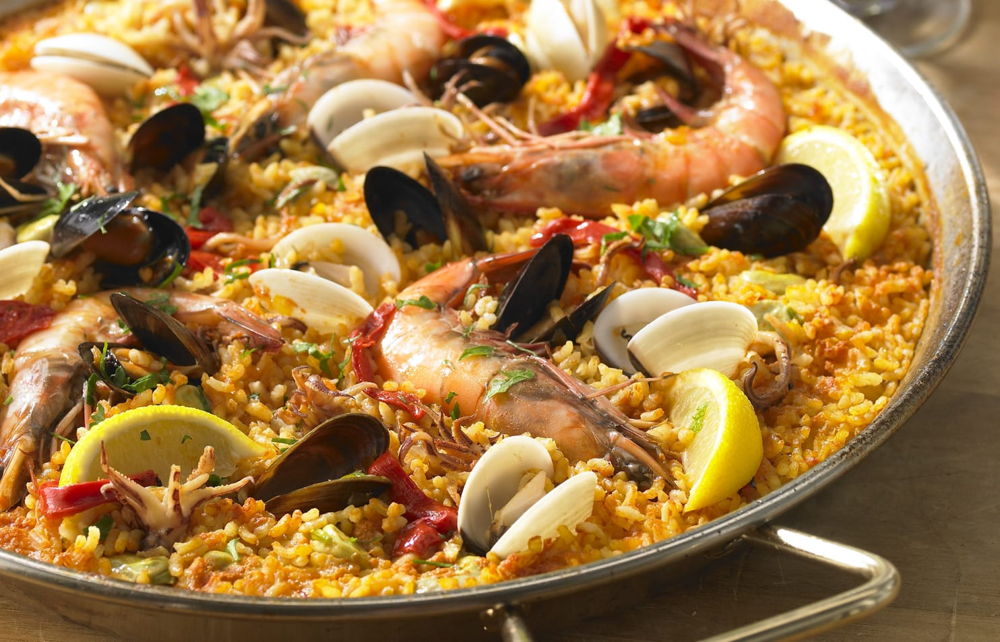

Paella
A traditional Spanish rice dish infused with saffron, filled with seafood, meats, and colorful vegetables — Paella is a festive and flavorful meal perfect for gatherings.
Preparation:
20–30 minutes
Cook:
40–45 minutes
Total:
1 hour 10 minutes
Ingredients:
- 2 tablespoons olive oil
- 1 onion, finely chopped
- 3 cloves garlic, minced
- 1 bell pepper, chopped
- 2 medium tomatoes, grated or finely chopped
- 1½ cups (300g) paella rice or short-grain rice
- 3¼ cups (800ml) chicken broth or seafood stock
- ½ teaspoon saffron threads (steeped in 2 tbsp warm water)
- ½ teaspoon smoked paprika
- Salt and pepper to taste
- 8–10 shrimp or prawns
- 8–10 mussels or clams (scrubbed and debearded)
- 1 cup cooked chicken (chopped or shredded)
- ½ cup green peas (fresh or frozen)
- Fresh parsley and lemon wedges for serving
Instructions:
- Heat olive oil in a wide pan (paella pan if available) over medium heat. Sauté onion, garlic, and bell pepper until soft.
- Add grated tomato and cook for a few minutes until slightly reduced. Stir in paprika and saffron water.
- Add rice and stir to coat the grains in the mixture.
- Pour in the broth and season with salt and pepper. Bring to a simmer and cook uncovered for 10 minutes, without stirring.
- Arrange the shrimp, mussels, and chicken over the rice. Lower the heat and simmer gently for another 15–20 minutes until rice is tender and liquid is mostly absorbed.
- Scatter the green peas on top in the last 5 minutes of cooking.
- Once cooked, remove from heat and cover with a clean towel for 5 minutes to rest.
- Garnish with chopped parsley and serve with lemon wedges.